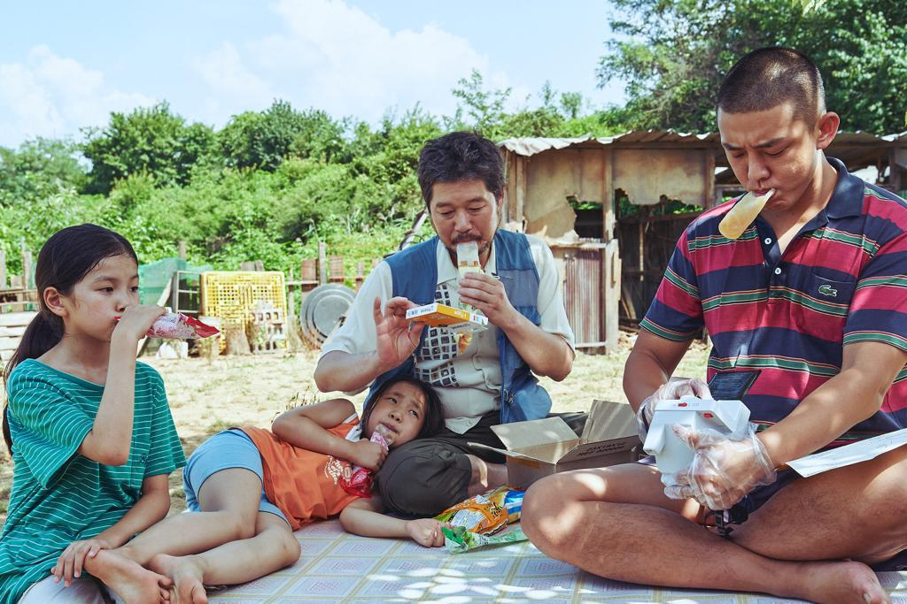

FILM KOREA VOICE OF SILENCE TAYANG DI INDONESIA
Konten ini diproduksi oleh kumparan K-Pop
17 November 2020 14:20

Klik disini untuk melihat trailer nya
Film Korea Selatan Voice of Silence akhirnya tayang di Indonesia melalui KlikFilm Premiere. Film box office ini dibuat oleh sutradara Hong Eui-jeong dan terpilih menjadi salah satu dari 12 proyek di Venice Biennale College-Cinema 2016/2017.
Film tersebut sempat tayang di Festival Film Internasional Cannes, Marché du Film, pada Juni 2020 dan baru dirilis di Korea Selatan pada 15 Oktober 2020.
chemistry Di hari pertamanya, Voice of Silence ditonton hampir 16 ribu orang dan meraih 31,1 persen dari box office, serta merebut tempat pertama yang sebelumnya diduduki film Pawn.
Dalam waktu sepekan, Voice of Silence ditonton 220.395 orang dan menjadi film indie pertama yang menempati posisi teratas di box office Korea Selatan saat pandemi berlangsung.
"Kami bersyukur November 2020 ini Klik Film bisa menayangkan Voice of Silence. Semoga bisa mengobati rasa penasaran pencinta film Korea,” kata Direktur KlikFilm, Frederica,
Sinopsis Film Korea Voice of Silence
Voice of Silence menceritakan sosok Tae-in (Yoo Ah-in) yang tidak pernah berbicara, serta Chang-bok (Yoo Jae-myung) seorang lelaki tua yang religius dan bekerja untuk sebuah organisasi kejahatan.
Suatu hari, mereka menerima perintah khusus untuk merawat Cho-hee (Moon Seung-ah), gadis berusia 11 tahun yang diculik untuk dimintai uang tebusan.